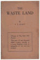
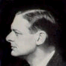
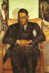

Biography of the authorThomas Stearns Eliot, or T.S. Eliot as he is better known, was born in 1888 in St. Louis. He was the son of a prominent industrialist who came from a well- connected Boston family. Eliot always felt the loss of his family's New England roots and seemed to be somewhat ashamed of his father's business success; throughout his life he continually sought to return to the epicenter of Anglo- Saxon culture, first by attending Harvard and then by emigrating to England, where he lived from 1914 until his death. Eliot began graduate study in philosophy at Harvard and completed his dissertation, although the outbreak of World War I prevented him from taking his examinations and receiving the degree. By that time, though, Eliot had already written "The Love Song of J. Alfred Prufrock," and the War, which kept him in England, led him to decide to pursue poetry full-time.Eliot met Ezra Pound in 1914, as well, and it was Pound who was his main mentor and editor and who got his poems published and noticed. During a 1921 break from his job as a bank clerk (to recover from a mental breakdown), Eliot finished the work that was to secure him fame, The Waste Land. This poem, heavily edited by Pound and perhaps also by Eliot's wife, Vivien, addressed the fragmentation and alienation characteristic of modern culture, making use of these fragments to create a new kind of poetry. It was also around this time that Eliot began to write criticism, partly in an effort to explain his own methods. In 1925, he went to work for the publishing house Faber & Faber. Despite the distraction of his wife's increasingly serious bouts of mental illness, Eliot was from this time until his death the preeminent literary figure in the English-speaking world; indeed, he was so monumental that younger poets often went out of their way to avoid his looming shadow, painstakingly avoiding all similarities of style. Eliot became interested in religion in the later 1920s and eventually converted to Anglicanism. His poetry from this point onward shows a greater religious bent, although it never becomes dogmatic the way his sometimes controversial cultural criticism does. Four Quartets, his last major poetic work, combines a Christian sensibility with a profound uncertainty resulting from the war's devastation of Europe. Eliot died in 1965 in London. |